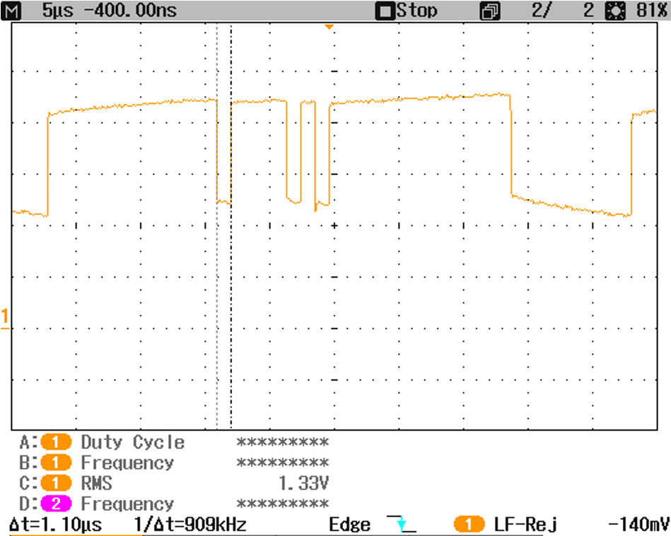
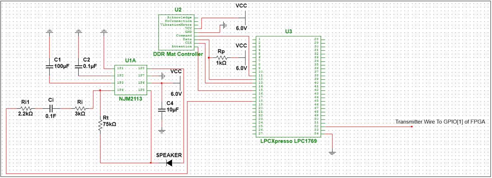
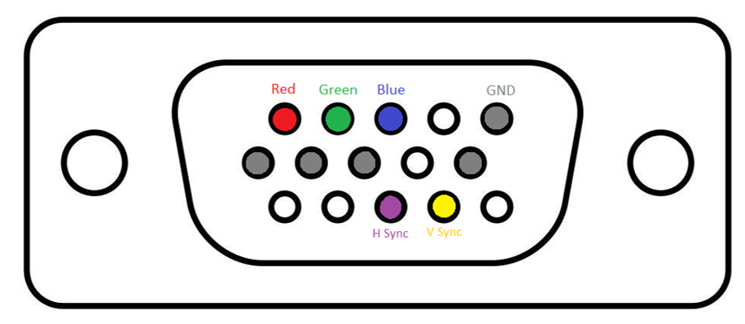

A Dance Rhythm Game using an LPC1769 Microcontroller and DE10-Lite FPGA
December 15, 2022
Bradlee Harrison and Adam Tran
The goal of our project was to emulate an arcade-style music rhythm game based on the music video game series Dance Dance Revolution. An example of this arcade game can be seen in the image below. The goal of the game is to tap arrows on the pad with the correct timing using your feet when prompted by arrows displayed on a screen.
Example of Game Machine:
Image: LABcrabs 27 January 2019 | DanceDance Revolution - A machine in Oakville, Ontario, Canada | Source
licensed under the Creative Commons Attribution-Share Alike 4.0 International license. No changes were made.
{kind=link}
Design
We developed a basic dance pad game using an LPC1769 microcontroller and a DE-10 Lite FPGA. We provide human interfaces with a serial PlayStation 2 Dance Pad controller, a speaker output, and a VGA monitor.
Microcontroller
The microcontroller handles the user input from the dance pad, the game state logic, and the music output logic. The microcontroller communicates game state logic with the FPGA using a Universal Asynchronous Receiver/Transmitter (UART) interface.
FPGA
The FPGA handles the processing of storing the display data, buffering it in its RAM and outputting the display information along with a vertical sync and horizontal sync to maintain the timing constraints of the VGA standard.
A block diagram of the system
.png)
Capabilities
The microcontroller is capable of playing two different songs which are programmed into it. The song, tempo, and volume can be configured using inputs on the dance pad. The microcontroller communicates over UART the X and Y positions of rectangles to place on the VGA display, which is then processed by the FPGA to control the VGA output.
Song Selection and Start Process
- Turn on the microcontroller and FPGA
- Press the SELECT button to select the song from two different tracks.
- Press the TRIANGLE button to change from display mode to music selection mode.
- In display mode, the display will show the arrows scrolling on the screen.
- In music selection mode, the display will freeze and the music will play.
- Press the CIRCLE button to increase the music volume.
- Press the X button to decrease the music volume.
- Press the LEFT arrow to decrease the music tempo.
- Press the RIGHT arrow to increase the music tempo.
- Press the START button to start the song selected.
Software Description
Input
The LPC1769 microcontroller receives digital input from a PlayStation 2
Dance Dance Revolution Regular Dance Pad. This dance pad uses a serial interface to
send input signals. Using an SPI connection, the LPC1769 functions as the "controller",
and the dance pad functions as a "target". What this means is that the LPC1769 uses a
series of command words to "poll" the pads it is connected to.
After polling the pad, it receives 5 bytes of data. The 4th
and 5th bytes of data contain the information for the buttons pressed on the dance
pad, including the left, up, right, down arrows, start, select and the cross, circle,
square, and triangle buttons. Based on the inputs from the dance pad, we save the state
and detect the edge when the switch is pressed by checking when the signal changes from
low to high.
Audio
The music is generated using the Digital-to-Analog Converter present on the LPC1769, which is then amplified using an audio amplifier and sent to a speaker.
When an input switch is triggered to begin the audio playback, we start a timer which controls all of the audio timings for the audio output, beginning the audio playback. Using other inputs, the volume can also be controlled using the X and Circle pads of the controller mat as well as the Left and Right pads for the tempo of the music.
Different musical notes are created by pulsing square waves at varying frequencies. To set the list of notes that will be output when the music is played, we created two arrays of notes and defined each note with a set amount of time to wait in between pulses. Up to 4 channels are able to play at the same time, each with 8-bit precision, generating harmonies and chords. A percussion sound is generated using a linear feedback shift register. Each channel of audio also can have set levels of decay, which gradually pulls the amplitude of the square wave lower.
Display
The graphical video output is displayed using a data connection to a basic VGA controller implemented on a DE10-LITE FPGA board. The board controls the timing and horizontal and vertical sync required for a 640 x 480 resolution VGA interface. To reduce the memory usage, we save the pixel values in an array of 320 x 240 memory, with two bits of color information per pixel. This results in only 57.6 kB of memory required to store all pixel values. The results of the VGA controller’s horizontal sync, vertical sync, and color data output can be seen in the following images.
Memory Buffering
The key to achieving seamless data handling and display was the implementation of a memory buffer using the FPGA. This component of the system was responsible for storing incoming data from the UART communication, then outputting it via the VGA communication protocol to the display.
UART Communications
To communicate from the LPC176 to the DE10-LITE FPGA board, we implemented a UART interface running at 900,000 baud rate. An example UART transmission can be seen in the oscilloscope screen capture below. The board receives 8-bit samples from the LPC1769 to indicate the position of a rectangle to draw in the memory. The bytes transmitted are in series. The first byte sent is an indicator of 0xFF to start the transaction. Following, the initial x position, final x position, initial y position, final y position, and the 6 bit color information are sent to the DE10-lite board through a GPIO input pin, which then has a UART receiver and decoder to write the received values as blocks into the board’s memory.
Example UART Transaction
Hardware Description
Our audio hardware uses an audio amplifier connected to a speaker. We wired our PlayStation2 Dance Pad with an SPI connection to the LPC1769 with SPI IN Command into pin 11, SPI OUT Data into pin 12, Clock into pin 13, and Attention into pin 15. The Acknowledge connection as well as the vibration motor connection were not needed. A pull-up resistor value of 1k ohms for the Data connection of the SPI was needed due to an open collector output of the lines, which cannot drive voltages.
Hardware Schematic
For our VGA display output, a jumper wire was used to connect to the DE10-Lite GPIO_[1] pin and another jumper wire was used to connect the grounds between the DE10-Lite and the LPC1769. The VGA connector on the DE10-Lite provides an interface for analog VGA output. We wired our display to the connector on the end of this board. The pins necessary for basic VGA output that were controlled by our DE10-Lite VGA controller can be seen in the image below.
DE15 VGA Pin Description
For the audio amplifier circuit, we followed a standard application circuit from the NJM2113 data sheet, but we replaced the capacitor C1 with a 100uF capacitor instead of a 1.0uF capacitor in order to improve power supply rejection ratio and used a C2 of 0.1uF instead of 5uF.
Some of our resulting VGA display and final circuit can be seen in the images below: